| - | Character | Speed | - | - | Score | - |
|---|---|---|---|---|---|---|
| 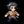 | Aria | 10:42.18 | 158th | 4411 | 841st | |
| 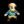 | Bard | 4:40.54 | 121st | - | - | |
| 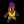 | Bolt | 5:38.29 | 112th | 3451 | 388th | |
| 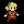 | Cadence | 7:24.09 | 167th | 12900 | 635th | |
| 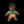 | Diamond | 5:34.60 | 74th | 3573 | 3818th | |
| Dorian | 5:17.75 | 90th | 3291 | 491st | ||
| 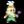 | Dove | 3:35.42 | 80th | 555 | 650th | |
| Eli | 9:20.23 | 83rd | 3068 | 1612th | ||
| Mary | 10:03.95 | 106th | 3505 | 812th | ||
| 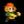 | Melody | 7:53.51 | 188th | - | - | |
| 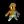 | Monk | 10:46.38 | 84th | 5591 | 664th | |
| 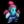 | Nocturna | 9:48.05 | 162nd | 13096 | 560th | |
| 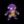 | Tempo | 6:27.21 | 157th | 3727 | 1621st | |
| 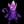 | Coda | - | - | 835 | 120th | |
| 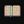 | Story | 45:20.24 | 51st | 12512 | 820th | |
| 9char | 1:24:21.89 | 21st | 25953 | 108th | ||
| 13char | - | - | 3384 | 374th |
| - | Character | HrdSp | NRSp | RndSp | PhsSp | MysSp | - | HrdSc | NRSc | RndSc | PhsSc | MysSc | DLess |
|---|---|---|---|---|---|---|---|---|---|---|---|---|---|
| Aria | - | - | - | - | - | - | - | - | - | - | - | ||
| Bard | - | - | - | - | - | - | - | 2193174th | - | - | - | ||
| Bolt | - | - | - | - | - | 138177th | - | - | - | - | - | ||
| Cadence | - | 14:22.0880th | 18:41.67135th | - | - | - | 28431335th | 45431387th | 1033822nd | - | 10-1-1238th | ||
| Diamond | - | - | - | - | - | - | - | - | - | - | - | ||
| Dorian | - | - | - | - | - | - | - | - | - | - | - | ||
| Dove | 4:50.9010th | 4:33.0217th | - | - | - | 21457th | 17547th | 137118th | - | 97188th | - | ||
| Eli | - | 15:46.7516th | - | 12:46.0946th | - | 28339th | 249812th | - | 2153100th | 56361st | - | ||
| Mary | - | - | - | - | - | - | - | - | - | - | - | ||
| Melody | - | - | - | - | 15:23.9244th | - | - | - | - | 1176477th | - | ||
| Monk | - | - | - | - | - | - | - | - | - | - | - | ||
| Nocturna | 15:08.2055th | - | - | - | - | 44572295th | - | 49531270th | - | 2611692nd | - | ||
| Tempo | - | - | - | - | - | - | 25055th | - | - | - | - | ||
| Coda | - | - | - | - | - | - | - | - | - | - | - |
Last Updated:2021/05/21 10:43